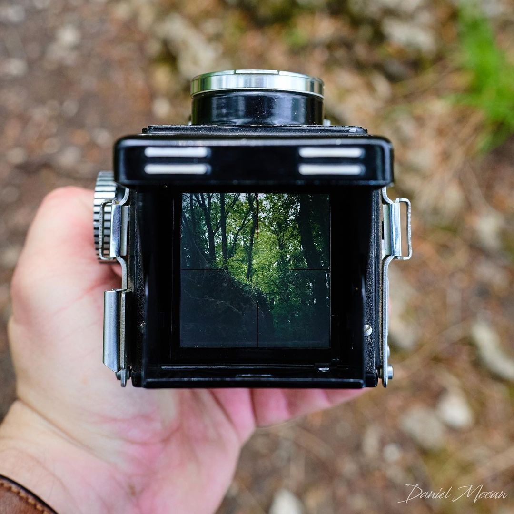

Camaras
Existe una inmensidad de camaras analogas en el mercado, muy pocas hoy en dia se siguen fabricando y
las que existen las puedes encontrar facilmente en algun mercado de pulgas o en MarketPlace dentro de facebook
o incluso hasta puedes tener alguna arrumbada en tu casa
Dentro de cada una de las categorias de rollos existen varios tipos de camaras y a continuacion te voy a mostrar algunos de ellos
Camaras de 35mm

Son cámaras que utilizan un objetivo único para enfocar sobre el plano de imagen y al mismo tiempo
ser vista por el fotógrafo. El visor de tipo SLR es el que ofrece mayor fidelidad: el encuadre
observado es idéntico al que se plasmará sobre el soporte fotosensible (película o sensor), pues
la imagen que ofrece el visor es la captada por el objetivo, tanto para la previsualización como en
el momento del disparo.
Este tipo de visor réflex elimina cualquier tipo de error de paralaje y la imagen visualizada
tiene corregida tanto la inversión vertical como la horizontal gracias a que incorporan un pentaprisma
(representado en el esquema por la figura de color naranja).
Otra de las ventajas de las SLR es que, como la imagen que ofrece el visor es la misma que se va a
impresionar en la película, puesto siempre proviene del mismo objetivo: si se aplica algún filtro
fotográfico, etc. se podrá previsualizar el efecto introducido por el mismo.
Muchas de estas camaras son electronicas y totalmente automaticas, son las que
nustros padres comunmente utilizaban.
Son discretas y pequeñas, ideales para llevar en la bolsa todo el tiempo, tambien al
ser totalmente automaticas ya que como su nombre lo dice en la traduccion al español
"Apuntar y Disparar" por lo tanto ya no tienes que preocuparte por la velocidad, apertura
del diafragma, o incluso el enfoque, simplemente preocuparte de encuadrar la imagen y listo.

Estas máquinas aparecieron hace casi exactamente cien años, tratando de dar una respuesta a las
pesadas cámaras de la época con una relación perfectamente balanceada entre tamaño y calidad
(gracias en parte al uso de la película de 35mm, que mantuvo su hegemonía durante casi todo el siglo).
Lo caracteristico de este tipo de camaras es su enfoque.La camara tiene 2 "ventanas" una de esas
ventanas sirve para encuadrar y enfocar y la otra ventana tiene el parche de el telemetro, el cual al
mover el dial de enfoque de la camara este se movera y proyectara una imagen fantasma al visor el cual
tiene que ser encuadrado con el objeto que se quiera enfocar para tener un enfoque correcto.
Estas camaras son regularmete mas pequelas que una SLR ya que carecen de un espejo.
Camaras de Formato Medio

Son cámaras fotográficas que disponen de dos objetivos gemelos, con
distancia focal idéntica, colocados uno sobre el otro, el superior se encarga de mostrar el encuadre y
enfoque de la camara y mostrarlo en un visor que esta justamente arriba de la camara, a ese tipo de visor
se le conoce como visor de cintura.
El lente inferior es aquel que cuenta con el obturador y los diafragmas y se encarga de hacer la toma.
Las TLRs son cámaras que generalmente utilizan película de rollo, formato 120 en un tamaño de imagen de 6x6 regularmente, aunque hay algunas que
cuentan con un dispositivo que permite el uso de carretes de 35 mm (por ejemplo la Rolleyflex con su
dispositivo Rolleiquin), mientras alguna otra, como la Agfa Flexilette, directamente usa este tipo de película.

Las cámaras modulares son cámaras las cuales se les puede retirar desde el visor,la pantalla de enfoque
y el lente, se le pueden agregar varios accesorios como empuñaduras motores para que corra la
película automáticamente sin necesidad de accionar la palanca de arrastre, entre muchos accesorios más.
Son las cámaras más conocidas de formato medio ya que hay cámaras que manejan diferentes tamaños de
foto como la mamiya 645 la cual ocupa un tamaño de fotograma de 6x4.5 el cual te deja tomar
un total de 15 fotografías o alguna hasselblad 500cm que maneja el formato de fotograma 6x6
el cual te deja tomar 12 fotografías o incluso una mamiya RB67 la cual maneja un tamaño de
fotograma de 6x7.
Existen cámaras como por ejemplo de la Mamiya rb67 a la cual maneja un back el cual se puede retirar
y cambiar por un formato más pequeño ya sea 6x6 a 6x4.5 en la cámara
Camara Instantanea

La cámara instantánea es una cámara que utiliza un tipo de película que
permite crear un positivo directo, revelándolo "al momento", después de hacer la foto. Polaroid
fue la empresa que inició (y patentó) cámaras instantáneas con un espejo inversor, "para girar la
imagen a derechas", así como sus consumibles, con un procedimiento químico instantáneo, que fueron
producidos bajo licencia por distintos fabricantes. Kodak mejoró el sistema creando una tecnología
sin espejo inversor (que permite cámaras más compactas), con exposición desde la parte posterior del
positivo, en ella se inspiró Fujifilm para crear su actual tecnología Instax (también sin espejo).
Camara de formato 110

Al contrario que las anteriores, estas cámaras están pensadas para aficionados y caben fácilmente en
un bolsillo. Suelen estar equipadas con un objetivo de foco fijo de 25 mm. Un ejemplo clásico es la
Kodak Pocket Instamatic. Todas llevan película en rollo de 16 mm., alojada en un pequeño chasis con
dos núcleos, proporcionan 12, 18 ó 20 fotogramas 13x17 mm., correspondientes al código de película
denominado 110.
Cada día son más raras, ya que su nicho comercial está siendo ocupado por las APS y las de visor directo.